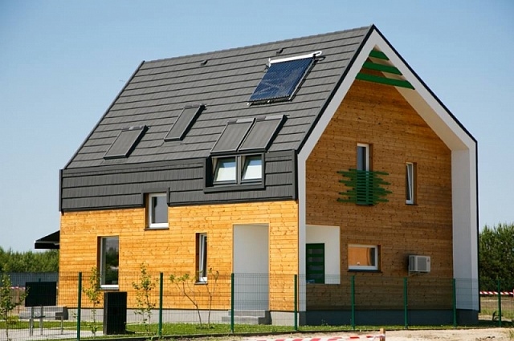
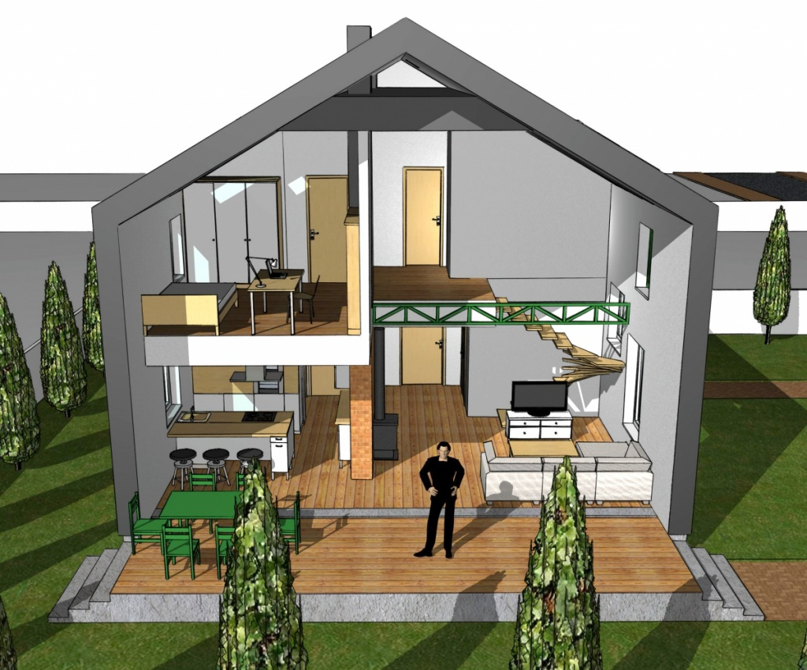
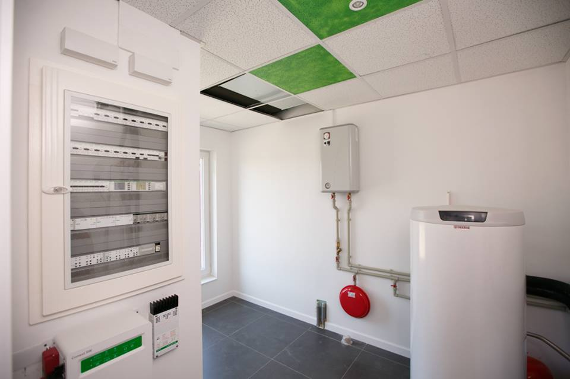
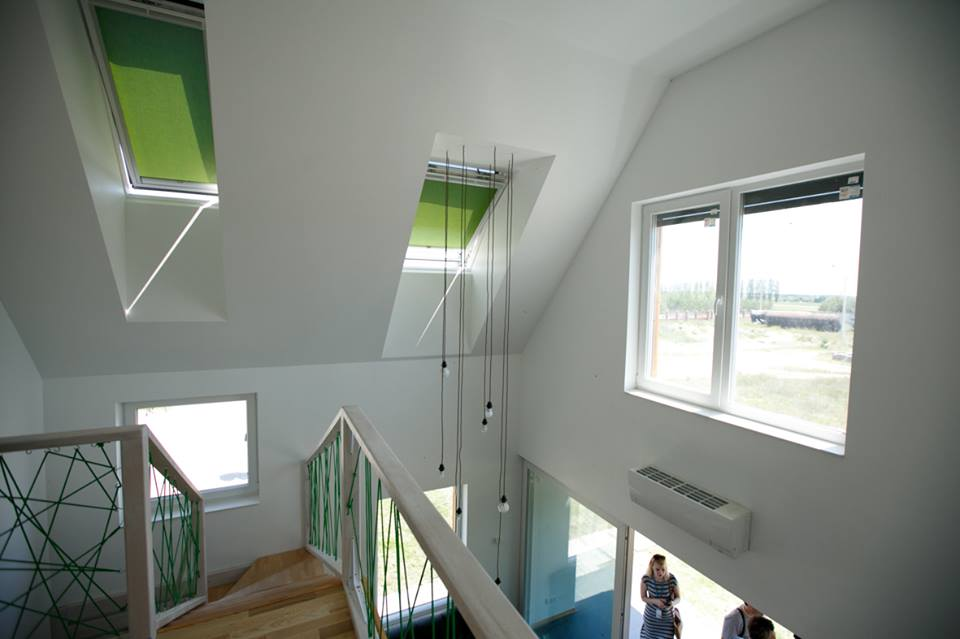
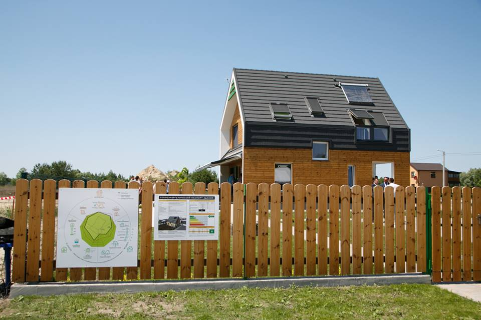

Під Києвом введено в експлуатацію перший в Україні серійний енергоефективний будинок
Цього тижня офіційно було введено в експлуатацію перший серійний енергоефективний будинок в Україні – OptimaHouse, який було створено на основі європейських концепцій «Мультикомфортний дім» та «Активний дім», спеціально адаптованих для українського ринку. Низький рівень енергоспоживання, короткі терміни будівництва, незалежність від газопостачання та доступна ціна – одні з головних переваг новобудови, повідомляє ресурс
OptimaHouse - це компактний сучасний будинок загальною площею 130 м2, з мансардою і терасою, розрахований на сім'ю з 3-х чоловік. Розробкою проекту, який стартував в серпні минулого року, займалася команда білоруських та українських архітекторів.
Енергоеефективний будинок побудували в селі Микуличі (20 км від Києва) на ділянці 0,06 га, що розташована на території котеджного містечка. Компанія-забудовник («Доступне житло») офіційно повідомила, що будинок знаходиться в стані 100% готовності: окрім загально-будівельних та фасадних робіт, тут вже провели всі необхідні комунікації. А також встановили теплові насоси з рекуперацією тепла, сонячні панелі і систему «розумний дім».
Отже, для опалення будинку можна використати систему теплового насоса в поєднанні з сонячними панелями і сонячними колекторами для підігріву води, які встановлені на даху з західної та східної сторони будівлі. Економити на електроенергії дозволить також продумана система природного освітлення і прозорі конструкції (фасадні і мансардні вікна, двері), які також забезпечать надходження природнього тепла.
В окремому приміщенні будинку встановлено інвенторне обладнання з’єднане з акумулятором, який дозволяє перетворювати енергію сонця в електричну, а також накопичувати її на випадок непередбачених відключень в мережі.
Завдяки використанню енергоефективних технологій, сонячним батареям, високому рівню автоматизації управління енергоспоживанням, а також теплоізоляції і системі природного освітлення, річне споживання енергії будинком OptimaHouse буде на 65% нижче, ніж у звичайних будинків аналогічного розміру.
Таким чином річне споживання енергії для опалення будинку складе до 40 кВт-год/м2, (загальне споживання енергії - до 51 кВт-год/м2 на рік).
Вартість такого будинку становить до $1000/м2 з внутрішньою обробкою. Проект призначений для споживачів із середнім доходом. За словами розробників OptimaHouse, жителі стандартних будинків щомісяця за енерго- і водоспоживання платять близько $96, а мешканці OptimaHouse будуть платити $14 на місяць.
Введений в експлуатацію будинок OptimaHouse до 1 січня 2018 року буде працювати у виставковому режимі.
|